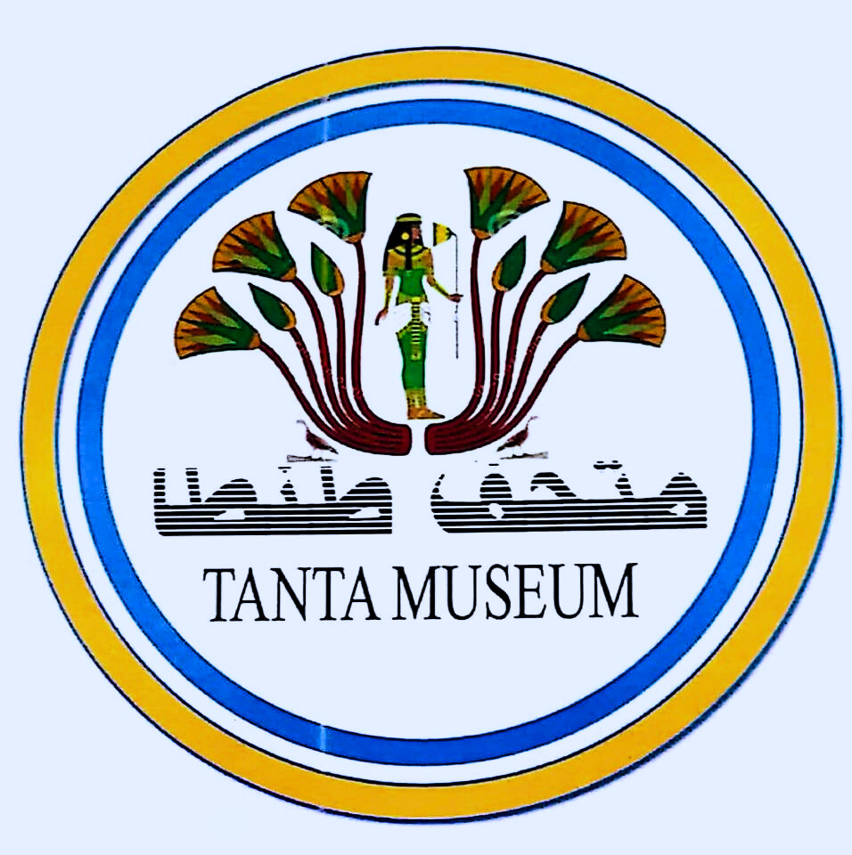

عن المتحف
كانت البداية الأولى لمتحف طنطا في عام 1913 حيث خُصصَت قاعة في مجلس مدينة طنطا لعرض بعض الآثار. وفي عام 1957 نُقِلَ إلى مدخل سينما البلدية. ثم وفي عام 1981 بدأت هيئة الآثار عملية إنشاء المتحف الحالي الذي جرى افتتاحه في عام 1990. تم إعادة افتتاح متحف آثار طنطا في الأول من سبتمبر عام 2019 بعد اغلاقه لمدة 19 عاماً للتجديد والترميم.